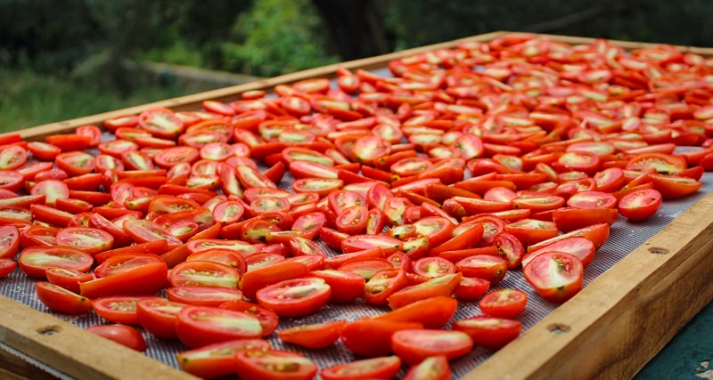

Sun-drying Fruits
I am going to touch on this form of “dehydrating” briefly. I can’t say that this would be my first choice amongst all the different methods, but the knowledge is great to have just in case. You never know when you might be stranded on an island with one Ace Hardware store and is abundant in sun and fruit. :)
For those of you living in a dry, arid climate, sun-drying fruits may be feasible. It is recommended when sun-drying food that the temperature needs to reach a minimum of 86° F, and the humidity is below sixty percent. If you live in a humid climate, however, sun-drying is likely out of the question, as mold can grow very quickly in warm, moist environments. It takes several days to dry foods outdoors, and because the weather is uncontrollable, this form of dehydrating can be risky.

High sugar and acid…
According to the National Center for Food Preservation, the high sugar and acid content of fruits make them safe to dry outdoors when conditions are favorable for drying. Vegetables are not recommended because they are low in sugar and acid, which will increase the risks of food spoilage.
Steps to Drying Outdoors
When drying fruits outside, they must be covered or brought inside at night. The cool night air condenses and could add moisture back to the food, thus slowing down the drying process. The slower the process, the more susceptible they are to bacteria and molds.
Selecting screens:
- Make sure that the mesh screens are food safe. The best option would be to look for stainless steel ones.
- Avoid galvanized metal cloth that is coated with cadmium or zinc. These metals can oxidize, leaving harmful residues on the food. Avoid copper and aluminum screening. Copper destroys vitamin C and increases oxidation. Aluminum tends to discolor and corrode.
- You will need two screens, sandwiching the fruit between them. The barrier will help to protect them from birds and insects… hopefully.
- I would even go as far as placing cheesecloth over the fruit and perhaps a screen over that.
Staging area:
- Arrange the screens on blocks that allow for better air movement around the food.
- Avoid doing this over grassy areas because the ground may be moist, which will slow down the drying process.
- The best place to put the screens is on a concrete driveway.
- You can also place them on a sheet of aluminum or tin. The reflection of the sun on the metal increases the drying temperature and time.
If you are one that drys fruit outside in such a manner, please leave a comment below to share your experiences with us! Blessings, amie sue
© AmieSue.com